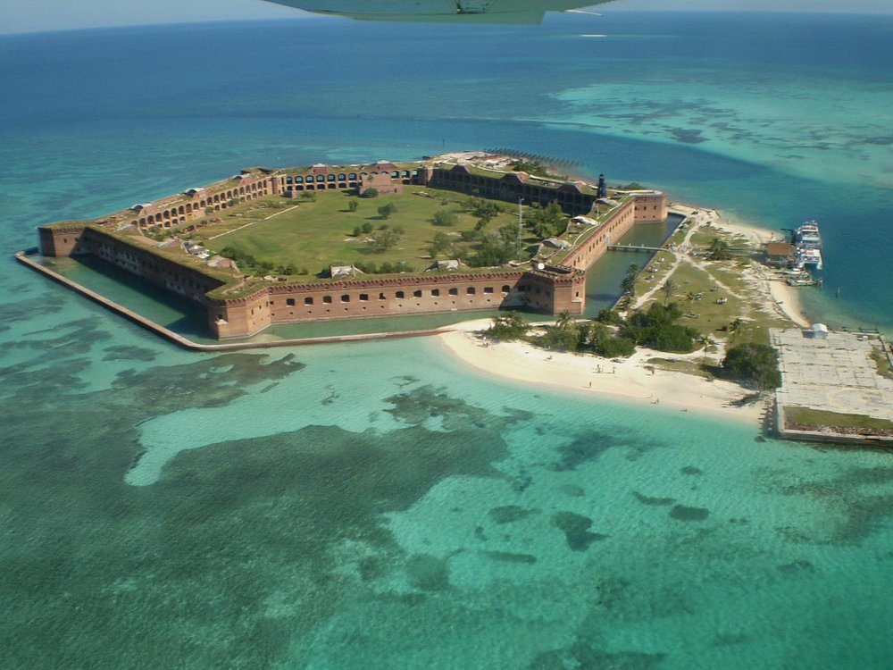
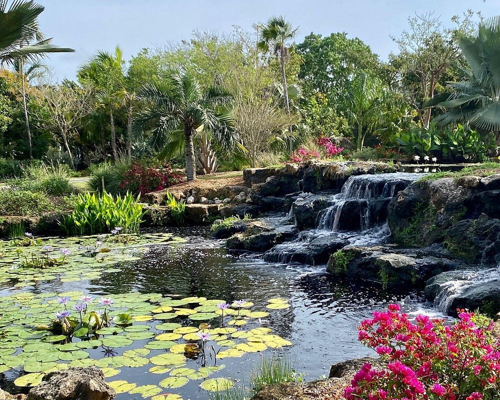
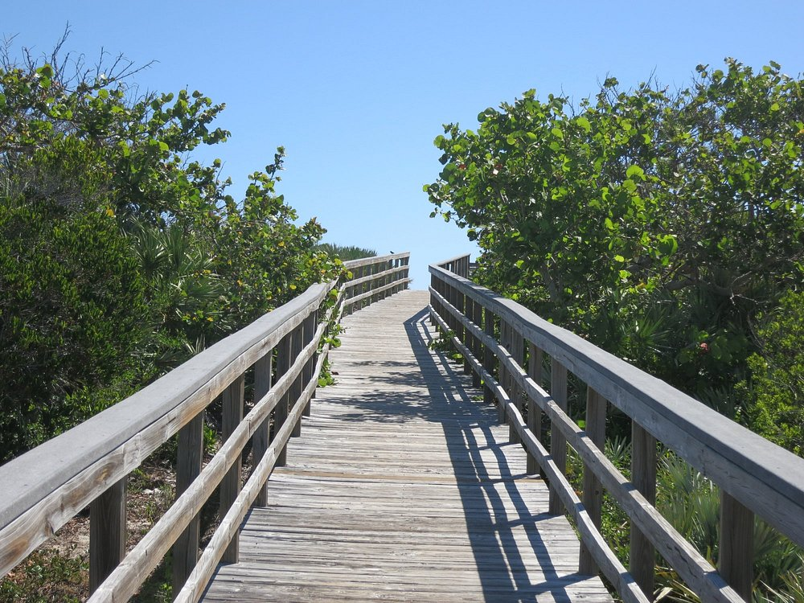
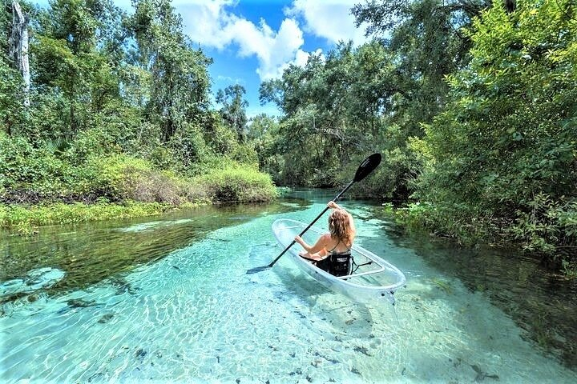

🤝🏼 Come join us for the chamber meet and greet Wednesday at 7:00 p.m.
Oar Chamber Services
Chamber of Commerce
Target Audience:
Oar Chamber Services aims to serve public good by providing reliable and timely route estimates, climate and related information to travelers and explorers of all kinds.
We believe that there is nothing like traveling with the peace of mind that your trip has excursions that are timily and detailed.
That is why we subscribe to the dry oar philosophy of plannning. We plan your trips and activities, allowing you to take time to breathe and explore the best of what Florida has to offer, Oar style.
Aggieland Water Tower

The fort is the largest brick structure on the east coast. We were only able to tour a small portion as we wanted some beach/snorkel time.
There are a lot of unlit spiral stairs and brick walkways.
The island can be reached by sea plane or private boat also.
Bird and fish life is abundant, there is also a crocodiles! There was no cell service!
Wear comfortable footgear and stay hydrated!

Naples Botanical Garden is a 170-acre world-class garden paradise that features the plants and cultures of the
tropics and subtropics between the latitudes of 26 degrees North and 26 degrees South including Brazil, the Caribbean, Southeast Asia, and Florida
Oar cuisine is probably one of the most unique and diverse in the world. The rich exchange of multicultural cuisines began when Ponce de León first staked a claim for Spain in 1513.
Early Indigenous, Spanish, and European styles were significantly influenced by ingredients and flavors brought by the Africans in the sixteenth century, and by early Anglo-American settlers from regions north of Florida.

Canaveral National Seashore's 24 miles (39 km) of shoreline is the longest stretch of undeveloped public beach on the east coast of Florida.
The hours are from 6am to 6pm but can be closed if there is a launch scheduled.

The leisurely river tour is perfect for nature lovers, families, and photographers. With a completely clear frame, the kayak allows you to see any turtles, fish, or small alligators you pass over.
Listen to entertaining commentary on the surrounding flora and fauna and enjoy a few swimming opportunities, along the way. Stunning white beaches, emerald-hued waters, challenging golf, and world-famous fishing define Destin, Florida
Our company strives to generate a custom designed logistics network that exceeds the expectations and needs of our
clients worldwide through the use of advanced software technology and trained professionals.
Scenario 2:
How do you ensure excellance in your industry?
Thanks to our in-house specialized team, we are able to excel in the
industry through our unique technology and innovative software design essential for efficiency in our field.
Scenario 3:
What services do you offer?
Additionally, to provide you with the standard freight forwarding services such as
inland, air, and ocean freight, our team of experts offers other services for your convenience.


 width="300" height="300" style="display:block; margin:10px"
width="300" height="300" style="display:block; margin:10px"